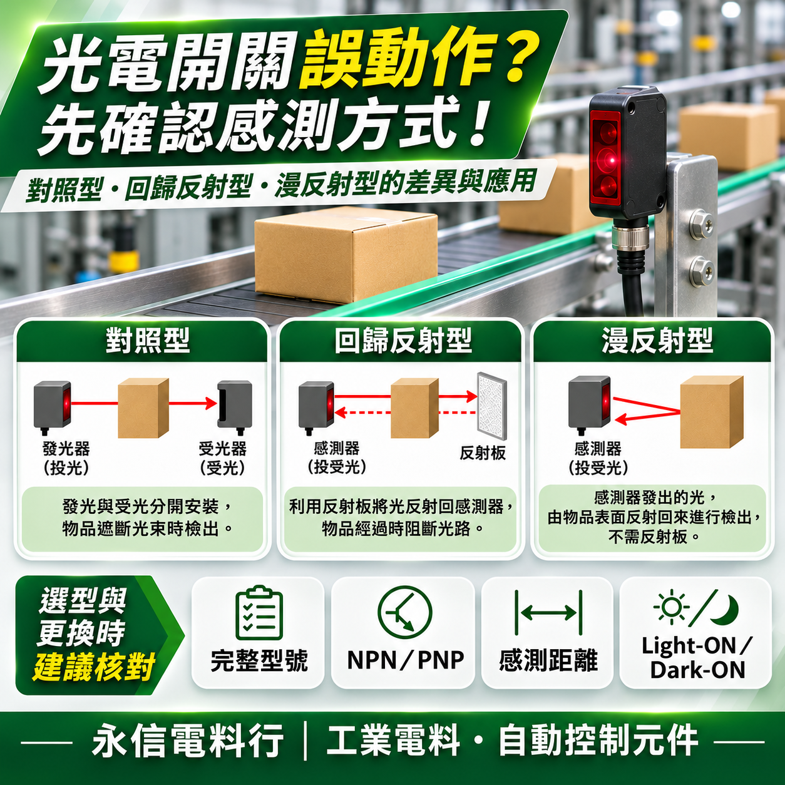

拍攝設備內部接線或檢查感測器安裝位置時，應遵守設備安全規定，由合格人員確認停機與能源隔離措施。避免在機台運轉中伸手調整感測器或接觸移動機構。
工廠自動化設備中，光電開關（Photoelectric Sensor）是很常見的感測元件。不論是輸送帶計數、包裝機定位、產品有無檢測，或機台自動化控制，都可能使用光電開關。

現場常見的異常情況
- 感測器指示燈有亮，PLC 卻沒有正常收到訊號。
- 黑色產品可以偵測，換成其他材質卻出現異常，或反過來。
- 輸送帶上明明沒有產品，機台卻誤判有物體。
- 更換同樣電壓的光電開關，設備卻無法正常運作。
- 機台使用一段時間後，開始出現漏計數或間歇性誤動作。
遇到這些情況，不一定是光電開關損壞，也可能是感測方式、輸出規格或現場環境不符合。
一、光電開關不是只有一種，常見三大類型
根據 OMRON 原廠光電感測器技術資料，工業用光電開關依感測方式可分為多種類型，其中常見的有以下三種。
1. 對照型（Through-beam）
對照型光電開關由獨立的發光器與受光器組成，兩者分別安裝在偵測區域的兩側。當物體經過並遮住光線時，感測器就能偵測到光量變化。
這類型常用於輸送線產品通過檢測、物體計數等場合。優點是通常具有較長的感測距離，而且對物體表面顏色及反射特性的依賴相對較低。但使用時仍需注意發光器與受光器的安裝位置、對準情況及被測物體尺寸。
2. 回歸反射型（Retro-reflective）
回歸反射型通常將發光器與受光器整合在同一個感測器本體，另一側則安裝專用反射板。當物體經過並遮斷反射光路時，感測器便能偵測物體。
這類型不需要在對面另外安裝有線的受光器，因此在部分輸送設備中，布線會比較方便。不過，反射板並不是一般鏡子就能任意替代。此外，若偵測物體具有高度反光或透明特性，可能需要選擇具備偏光或透明物體檢測功能的適當型號。
3. 漫反射型（Diffuse-reflective）
漫反射型也是將發光器與受光器整合在同一個本體內，但通常不需要另外安裝反射板。感測器發射光線後，利用物體表面反射回來的光進行偵測。
這類型安裝相對簡單，適合部分近距離有無檢測應用。但同樣的感測距離，白色物體與黑色物體不一定具有相同的偵測效果，因為物體的顏色、表面材質、反射率與角度，都可能影響感測器接收到的光量。
OMRON 原廠資料也說明，漫反射型感測器的額定感測距離常會以指定的標準白色測試物體作為條件，因此不能直接假設所有顏色與材質都能達到相同距離。
二、為什麼光電開關有亮燈，PLC 卻沒有正常動作？
感測器上的指示燈，只能協助了解產品某些運作狀態，不能單憑亮燈就認定整個控制迴路正常。例如，部分光電開關可能具有電源指示燈、動作指示燈或穩定度指示燈，其意義須依原廠型號確認。
第一項：NPN 與 PNP 輸出
工業用直流光電開關常見 NPN 或 PNP 電晶體輸出型式。兩者的輸出電氣特性不同，必須與 PLC 輸入電路的設計相容。不能只因為兩顆光電開關都是 DC24V，就認為能直接互換。
OMRON E3FA、E3RA 等系列的原廠規格表，就明確區分 NPN 與 PNP 型號。
第二項：Light-ON 與 Dark-ON 動作模式
有些光電開關可以選擇 Light-ON 或 Dark-ON，也有些型號具有固定的動作方式。簡單來說，這兩種模式與感測器接收到光線時，輸出會如何動作有關。
若更換產品後動作邏輯不同，可能造成 PLC 接收到的訊號狀態與原設備要求不一致。因此，規格核對時，除了確認 NPN／PNP，也要確認原本的動作模式。
三、光電開關經常誤動作，可能與現場環境有關
如果機台原本運作正常，最近卻開始發生漏計數或偵測不穩定，除了感測器本體，也應留意以下因素。
鏡面或透鏡髒污
粉塵、油霧或水氣可能影響發光與受光狀況。
被測物材質改變
白色、黑色、亮面或透明包裝材料可能有不同反射特性。
安裝位置偏移
機台長期振動可能造成支架鬆動或光軸偏移。
背景或其他光源
背景反射、鄰近感測器光線與現場照明條件都應納入評估。
所以，光電開關出現異常時，不建議單純增加感測距離，或直接換成外觀相似的產品。
四、更換光電開關，不能只看電壓與外觀
假設原本機台使用一顆 DC24V 的光電開關，現在準備更換另一顆同樣是 DC24V 的產品，仍不代表一定能直接使用。
尤其是原本採用回歸反射型的設備，若直接換成一般漫反射型，即使外觀相似，也可能因工作原理不同而無法正常運作。
五、遇到光電開關異常，建議先準備哪些資料？
- 舊品品牌及完整型號。
- 感測器本體銘牌與外觀照片。
- 原本的安裝位置與接線照片。
- 被偵測物體的材質、顏色及大致尺寸。
- 感測距離與設備使用條件。
- 故障現象，例如漏計數、誤動作或完全沒有輸出。
參考資料
- OMRON Industrial Automation｜Overview of Photoelectric Sensors
- OMRON Industrial Automation｜E3FA / E3RA / E3FB / E3RB Specifications
原廠資料用於說明感測原理與系列規格概念。實際更換仍應以設備原始設計、完整型號與對應原廠規格書為準。
永信電料行｜工業電料・自動控制元件
光電開關看似只是小小一顆感測器，實際上卻可能影響整條自動化產線的計數、定位與運轉判斷。選對感測方式、確認輸出規格，比單純找一顆外觀相似的產品更重要。
若有光電開關、自動控制元件或機台維修材料的規格核對需求，歡迎準備舊品完整型號、銘牌、接線位置、設備使用條件及相關照片，以便進一步核對規格。